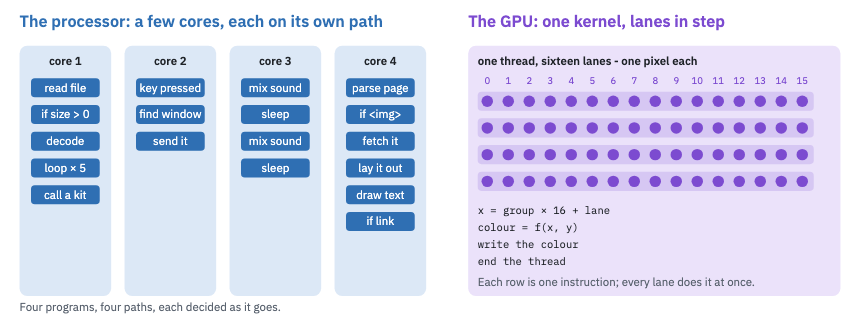
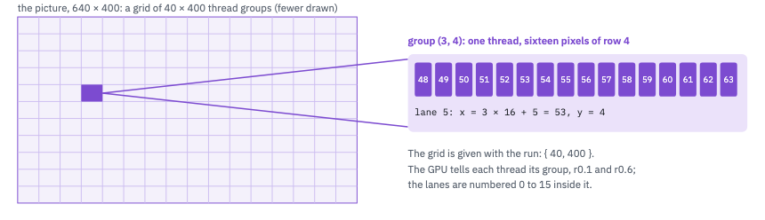
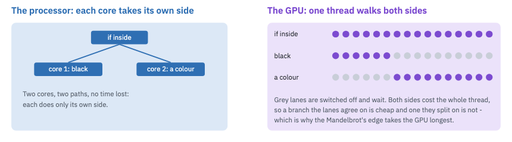
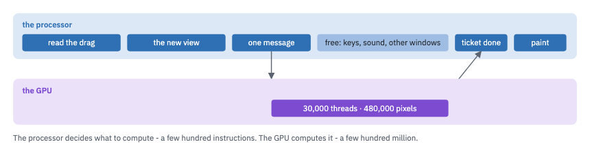

A window whose picture is computed, sixty times a second, by a program running on the GPU - a kernel. On the way: why a computer has two kinds of processor, what each is good at, how a kernel is written and run, and how the two share one job.
Every program you have written so far ran on the processor - the CPU. The M700 has four of its
cores. Each one runs a program of its own, one instruction after another, and follows its own path through
it: this if one way, that loop five times, a call into a kit. A core is fast at a single thing and
very good at deciding.
The GPU was made for pictures, where the same small sum is done for every one of a million pixels. It has many more, much simpler hands: the M700's has 24 execution units, each running seven threads, each thread sixteen lanes wide - 2,688 lanes. They do not each run a program of their own. A thread's sixteen lanes all do the same instruction at the same moment, each on its own pixel.

The processor's cores each follow their own program. A GPU thread's sixteen lanes follow one, together - and there are 168 such threads at once on the M700.
A kernel is the work for one pixel - or one sample, one particle - written once. You do not write the loop over the picture: the GPU runs the kernel once for every pixel, and each copy finds out which pixel is its own from where it sits in the grid.

The run's grid: 16,000 threads for a 640 by 400 picture, a lane a pixel. Nothing in the kernel loops over the picture.
The kernel is written in the GPU's own instructions, as text in your program, and the Compute Kit has
eu.lua turn it into the GPU's numbers. Here is this lesson's, the part that works out the pixel:
// the lanes 0 to 15, and the group's first pixel mov (8|M0) r10.0<1>:uw 0x76543210:v add (8|M0) r10.8<1>:uw r10.0<8;8,1>:uw 8:uw mul (1|M0) r2.0<1>:ud r0.1<0;1,0>:ud 0x10:ud // x for every lane at once - sixteen additions, one instruction add (16|M0) r12.0<1>:ud r10.0<8;8,1>:uw r2.0<0;1,0>:ud
Each line is one instruction. (16|M0) says sixteen lanes do it. r12 is a register -
each lane has its own part of it, so r12 holds sixteen different x's after that last line.
local compute = use("/Kosmos/Kits/compute")
local kernel = compute.kernel(text) -- assembled here, checked by the driver
local picture = compute.picture(640, 400) -- memory the GPU and the program share
local ticket = compute.run{ kernel = kernel, grid = { 40, 400 },
buffers = { picture },
constants = string.pack("<i4", frame) }
compute.run does not wait. It sends one message to the GPU's driver and answers at once with a
ticket; the window asks ticket:done() on its clock and paints when it says yes. Meanwhile the
processor is free - to read keys, or to get the next frame ready.
The kernel can reach only the buffers its run is handed. The GPU's driver reads every instruction before it keeps a kernel, and refuses one that could touch anything else - another window's pixels, the screen - and says at which line. That is Kosmos's rule about capabilities - what you were not handed, you cannot reach - one layer down, inside the GPU.
On the processor, an if costs almost nothing: each core goes the way its own data says. On the GPU
the sixteen lanes of a thread share one instruction. When some lanes want one side and some the other, the
thread walks both sides, switching off the lanes each side is not for.

A branch is free on the processor and shared on the GPU. Kernels are written so neighbouring lanes mostly agree.
The two are partners. GPU Fractal, which comes with Kosmos, divides every frame between them like this:

A frame of GPU Fractal. Neither could do the other's part well: the GPU cannot read a drag, and the processor would take a hundred times as long over the pixels.
Use the GPU when the same work is done for very many things, each on its own: pixels, sound samples, points of a simulation. Keep the processor for everything else - a small job, where the message costs more than the work; a job where each step needs the last; anything that reads files, talks to the network or decides what a person meant.
Press F5. The pattern moves, and the corner says how long the GPU took over the last frame.
The finished lesson is in Lesson's Project, under the three dots: 15-GPU.
Under QEMU, which has no Intel GPU, the window says so: a kernel needs the real thing - the M700's HD 530, or another Intel GPU of its generation.
xor x and y for a chequer, or shift the frame number further.ticket:time() is the GPU's own clock, in nanoseconds, from its first thread to its last.The kernel is assembled in your program by eu.lua; the Compute Kit puts its numbers in memory
and asks the GPU's driver to keep it, and the driver checks every instruction first. A picture is a region of
memory shared by your program, the GPU and the window, so the pixels are never copied: the run is one message
- which kernel, which buffers, a grid - and the pixels stay where they are (control by message, data by shared
memory). The ticket is the render engine's fence: a number the GPU writes when it has finished.
GPU Fractal computes the Mandelbrot set on the GPU and the same picture on the processor, the two times
side by side, and its Kernel button shows its kernel - forty-seven instructions. Open the IDE's
System tab, then /Kosmos/Apps/fractal.